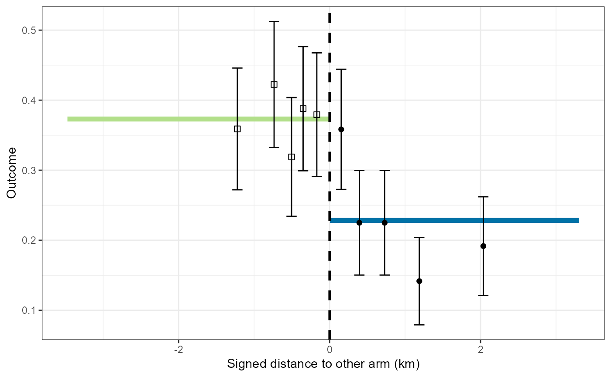

Graphical displays of the geography of a CRT
plotCRT.RdplotCRT returns graphical displays of the geography of a CRT
or of the results of statistical analyses of a CRT
Usage
plotCRT(
object,
map = FALSE,
measure = "nearestDiscord",
fill = "arms",
showLocations = FALSE,
showClusterBoundaries = TRUE,
showClusterLabels = FALSE,
showBuffer = FALSE,
cpalette = NULL,
buffer_width = NULL,
maskbuffer = 0.2,
labelsize = 4,
legend.position = NULL
)Arguments
- object
object of class
'CRTanalysis'produced byCRTanalysis()- map
logical: indicator of whether a map is required
- measure
measure of distance or surround with options:
"nearestDiscord"distance to nearest discordant location (km) "disc"disc "hdep"Tukey's half space depth "sdep"simplicial depth - fill
fill layer of map with options:
'cluster'cluster assignment 'arms'arm assignment 'nearestDiscord'distance to the nearest discordant location "disc"disc measure of surround "hdep"Tukey's half space depth "sdep"simplicial depth 'prediction'model prediction of the outcome 'none'No fill - showLocations
logical: determining whether locations are shown
- showClusterBoundaries
logical: determining whether cluster boundaries are shown
- showClusterLabels
logical: determining whether the cluster numbers are shown
- showBuffer
logical: whether a buffer zone should be overlayed
- cpalette
colour palette (to use different colours for clusters this must be at least as long as the number of clusters.
- buffer_width
width of buffer zone to be overlayed (km)
- maskbuffer
radius of buffer around inhabited areas (km)
- labelsize
size of cluster number labels
- legend.position
(using
ggplot2::themessyntax)
Details
If map = FALSE and the input is a trial data frame or a CRTsp object,
containing a randomisation to arms, a stacked bar chart of the outcome
grouped by the specified measure is produced. If the specified measure
has not yet been calculated an error is returned
If map = FALSE and the input is a CRTanalysis object plot of the
estimated contamination function is generated. The fitted contamination function is plotted as a continuous blue line against the measure of distance
from the nearest discordant location or of surround. Using the same axes, data summaries are plotted for
ten categories of distance from the boundary. Both the
average of the outcome and confidence intervals are plotted.
For analyses with logit link function the outcome is plotted as a proportion.
For analyses with log link function the outcome is plotted on a scale of the Williams' mean (mean of exp(log(x + 1))) - 1)
If map = TRUE a thematic map corresponding to the value of fill is generated.
fill = 'clusters'or leads to thematic map showing the locations of the clustersfill = 'arms'leads to a thematic map showing the geography of the randomizationfill = 'distance'leads to a raster plot of the distance to the nearest discordant location.fill = 'prediction'leads to a raster plot of predictions from an'INLA'model.
If showBuffer = TRUE the map is overlaid with a grey transparent layer showing which
areas are within a defined distance of the boundary between the arms. Possibilities are:
If the trial has not been randomised or if
showBuffer = FALSEno buffer is displayedIf
buffer_widthtakes a positive value then buffers of this width are displayed irrespective of any pre-specified or contamination limits.If the input is a
'CRTanalysis'and contamination limits have been estimated by an'LME4'or'INLA'model then these limits are used to define the displayed buffer.If
buffer_widthis not specified and no contamination limits are available, then any pre-specified buffer (e.g. one generated byspecify_buffer()) is displayed.
A message is output indicating which of these possibilities applies.
Examples
{example <- readdata('exampleCRT.txt')
#Plot of data by distance
plotCRT(example)
#Map of locations only
plotCRT(example, map = TRUE, fill = 'none', showLocations = TRUE,
showClusterBoundaries=FALSE, maskbuffer=0.2)
#show cluster boundaries and number clusters
plotCRT(example, map = TRUE, fill ='none', showClusterBoundaries=TRUE,
showClusterLabels=TRUE, maskbuffer=0.2, labelsize = 2)
#show clusters in colour
plotCRT(example, map = TRUE, fill = 'clusters', showClusterLabels = TRUE,
labelsize=2, maskbuffer=0.2)
#show arms
plotCRT(example, map = TRUE,
fill = 'arms', maskbuffer=0.2, legend.position=c(0.8,0.8))
#contamination plot
analysis <- CRTanalysis(example)
plotCRT(analysis, map = FALSE)
}
